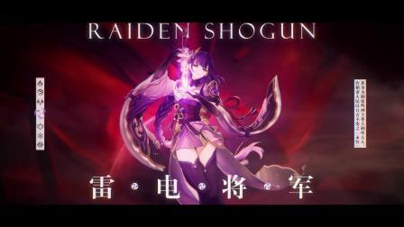

雷电将军
基础信息
称号：无
神之眼：雷
武器类型：长柄武器
所属：稻妻
生日：6 月 26 日
命之座：天下人座
星级：5 星
本名：雷电影
游戏角色 《原神》雷电将军
角色故事
雷电将军真名为 “雷电影”，她亲历了稻妻千百年来的诸多变迁，目睹了友人离去、国度面临危机。为了让稻妻永恒，她制造出完美人偶，自己则化作意识隐于刀中，以 “永恒” 为目标守护稻妻。
能力介绍
普通攻击・源流：进行至多五段的连续枪击，重击消耗一定体力进行向上挑斩，下落攻击从空中下坠冲击地面造成范围伤害。
元素战技・神变・恶曜开眼：展开净土一角，对周围敌人造成雷元素伤害，为附近角色授以雷罚恶曜之眼，该状态下角色攻击敌人时会协同攻击，造成雷元素范围伤害，且角色元素爆发伤害提升。
元素爆发・奥义・梦想真说：汇聚愿力斩出梦想一刀，造成雷元素范围伤害，并进入梦想一心状态，在此状态下，雷电将军使用刀攻击，普通攻击、重击与下落攻击伤害转为雷元素伤害，命中敌人可为附近角色恢复元素能量，同时自身抗打断能力提高，免疫感电反应伤害。
命之座效果
一心净土：提升元素充能效率。
无想的一刀：无视敌人一定防御力，大幅提升伤害输出。
殊胜之御：元素战技等级提升。
天领奉行的执事：元素爆发伤害提升，同时减少队伍中其他角色元素爆发的冷却时间。
千手百眼神像：元素爆发等级提升。
梦想的一刀：普通攻击命中时，有概率重置元素战技的冷却时间，并使下一次元素战技造成的伤害提升。
推荐装备
武器推荐：薙草之稻光、渔获、天空之脊、西风长枪等。
圣遗物推荐：绝缘之旗印 4 件套，主词条选择充能沙、雷伤杯 / 攻击杯、暴击头 / 暴伤头，副词条优先暴击、暴伤、攻击、元素充能。
队伍搭配
雷夜香班：雷电将军 + 夜兰 + 香菱 + 班尼特，蒸发队典型阵容，各角色技能配合，能打出高额伤害。
雷芙夜琴：雷电将军 + 芙宁娜 + 夜兰 + 琴，纯直伤队，依靠雷电将军和芙宁娜输出及全队辅助能力提高伤害利用率。
心雷纳夜：珊瑚宫心海 + 雷电将军 + 纳西妲 + 夜兰，超绽放流阵容，雷电将军造成超绽放伤害，双水队友提供直伤。
